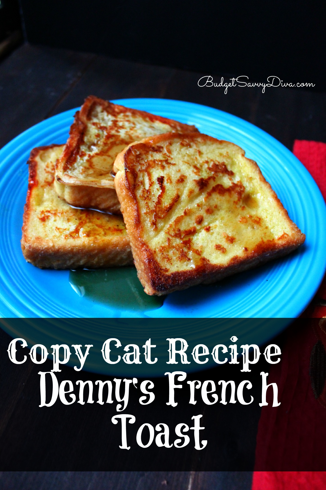

Copy Cat Denny's French Toast

Copy Cat Denny's French Toast
This is a personal favorite. This french toast recipe I believe tastes better than the original! I won't try to sway you one way or the other; I'll let you be the judge of that.
Ingredients
- 4 Eggs
- 2/3 Cup of Skim Milk
- 1/3 Cup of Flour
- 1/3 Cup of Sugar
- Pinch of Salt
- 1 teaspoon of Vanilla
- 1/2 teaspoon of Cinnamon
- 6-8 slices of Texas Toast or Brioche bread
- 4 Tablespoons of Butter
Directions
- Whish the following ingredients in a medium-large bowl: eggs, milk. salt, cinnamon, flour, sugar, vanilla.
- Melt Butter in a skillet over medium heat
- Soak Texas Toast each side for 30 seconds
- Once soaked place on skillet and cook each side - takes a couple minutes per side
- Serve with hot syrup
Return to recipes